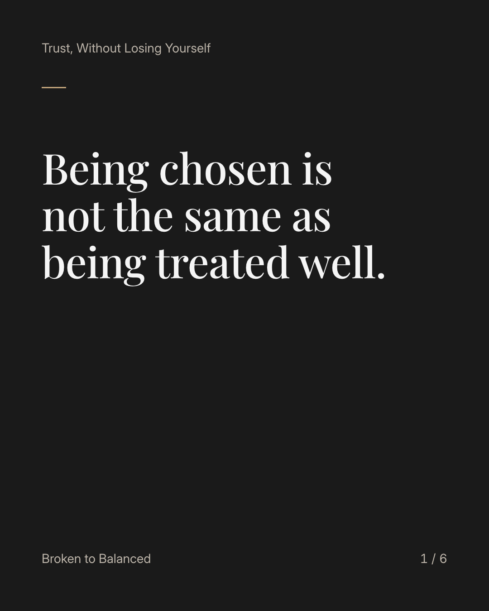
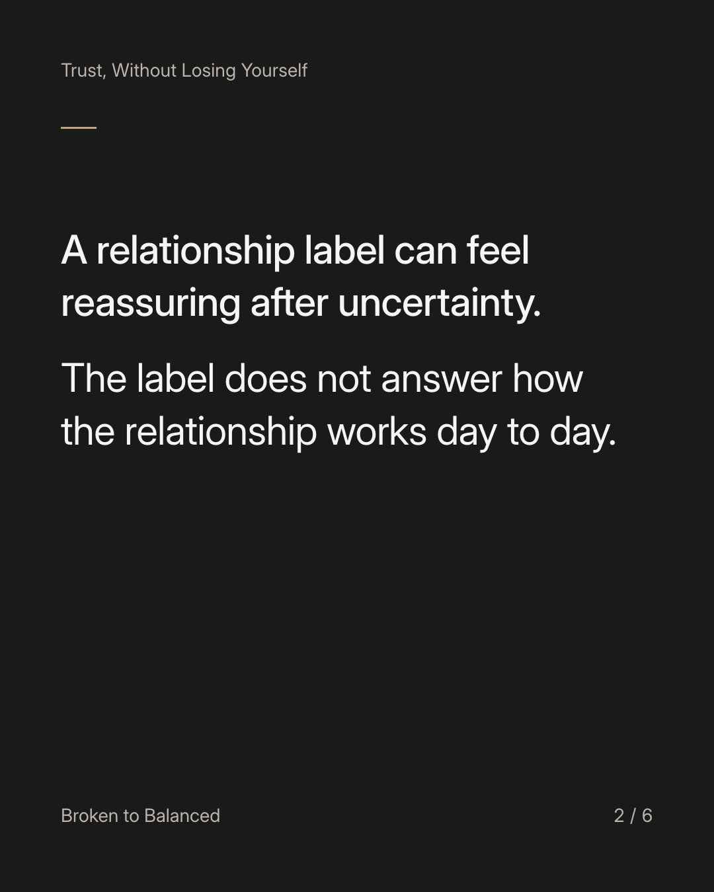
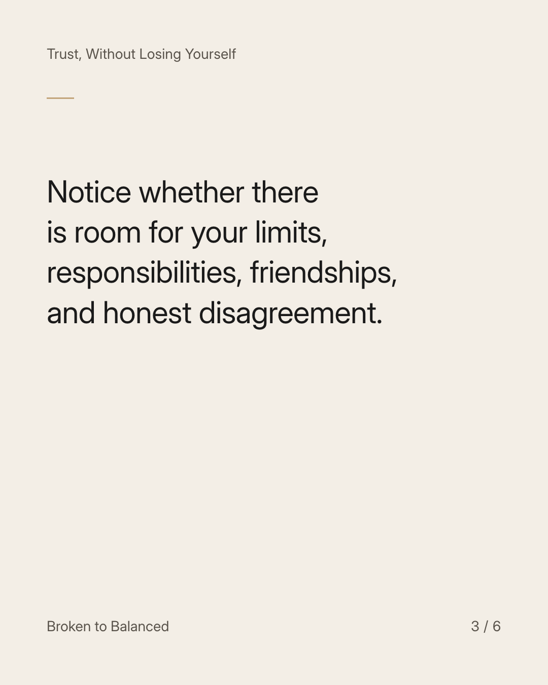
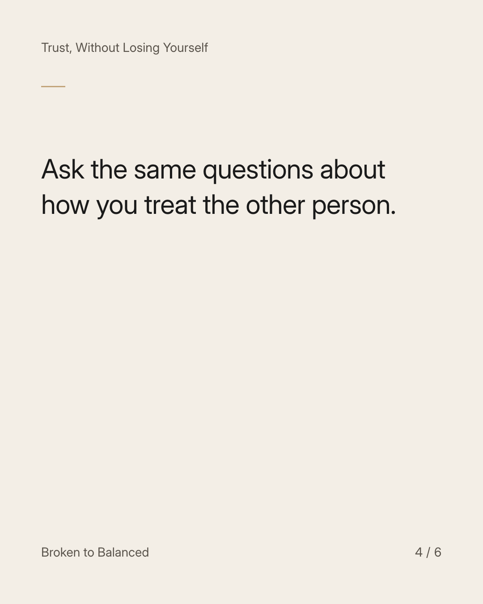
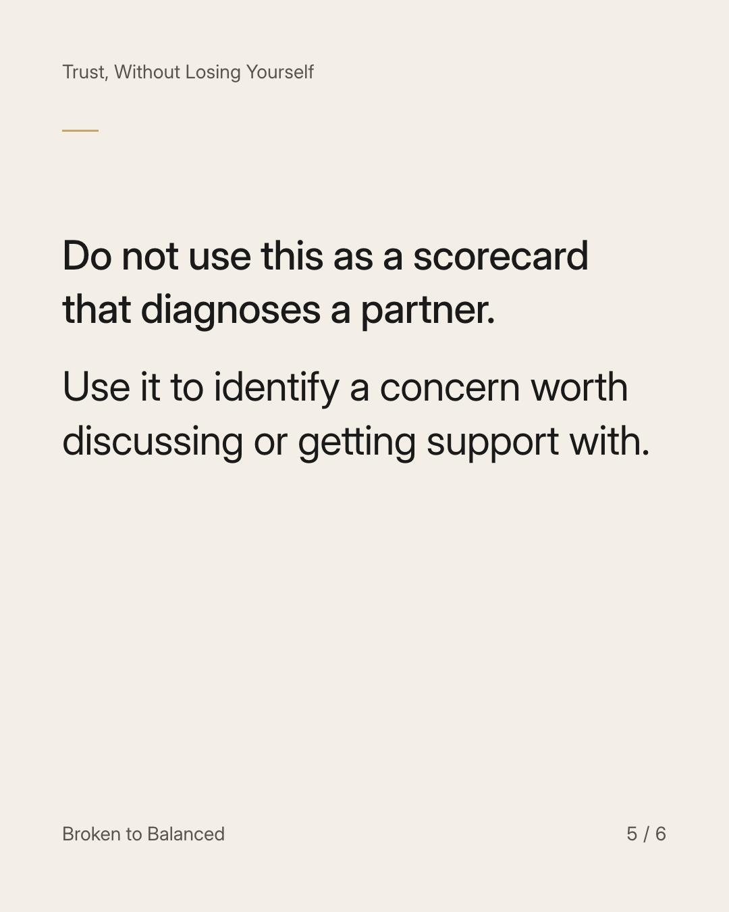
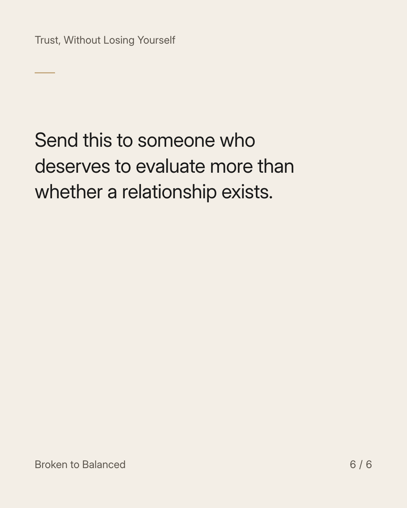

Exact text and accessibility text
Being chosen is not the same as being treated well.
Slide 1 of 6. Being chosen is not the same as being treated well.


Exact text and accessibility text
A relationship label can feel reassuring after uncertainty. The label does not answer how the relationship works day to day.
Slide 2 of 6. A relationship label can feel reassuring after uncertainty. The label does not answer how the relationship works day to day.


Exact text and accessibility text
Notice whether there is room for your limits, responsibilities, friendships, and honest disagreement.
Slide 3 of 6. Notice whether there is room for your limits, responsibilities, friendships, and honest disagreement.


Exact text and accessibility text
Ask the same questions about how you treat the other person.
Slide 4 of 6. Ask the same questions about how you treat the other person.


Exact text and accessibility text
Do not use this as a scorecard that diagnoses a partner. Use it to identify a concern worth discussing or getting support with.
Slide 5 of 6. Do not use this as a scorecard that diagnoses a partner. Use it to identify a concern worth discussing or getting support with.


Exact text and accessibility text
Send this to someone who deserves to evaluate more than whether a relationship exists.
Slide 6 of 6. Send this to someone who deserves to evaluate more than whether a relationship exists.
Exact caption
Plain-text fallback: select and copy the caption.